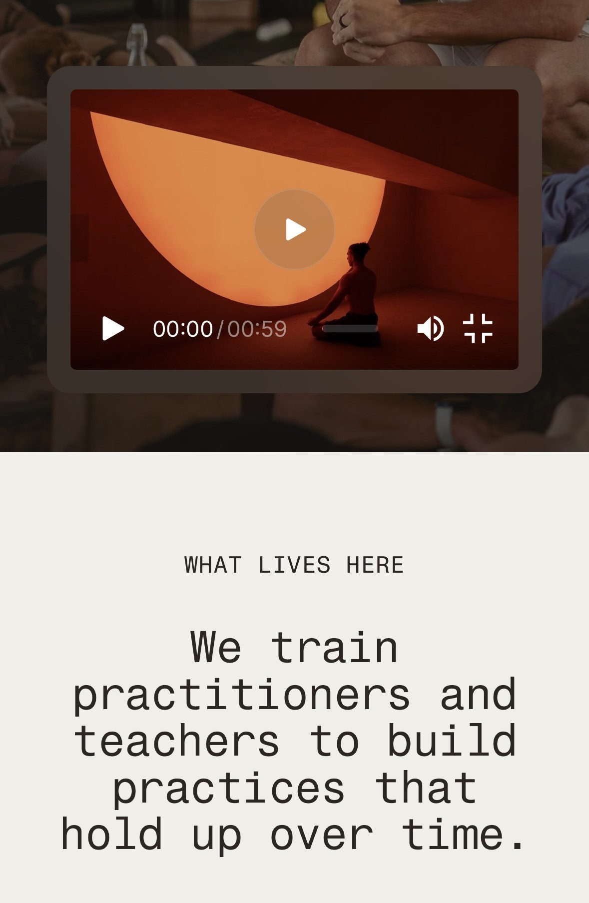

Card
Mismo material, otra forma. El blur y el tinte se leen sobre el degradado.
Safari-first · lab público
Emulación web del cristal / frosted glass. El protagonista es el material, no una barra de UI. Tres vehículos mínimos (pill, card, panel) lo muestran sobre fondos ricos. La cáscara fija abajo al centro permanece en el viewport: scrollea y mira cómo reacciona sobre cada fondo (incluye una zona de prueba con foto). Ajusta los sliders.
Mismo material, otra forma. El blur y el tinte se leen sobre el degradado.
Superficie más ancha para juzgar blur, grano y especular mientras scrolleas.
Prueba los presets Frost / Líquido abajo.
Varias formas, un solo material compartido por variables CSS.
En iPhone / iPad el lab respeta env(safe-area-inset-*).

Zona de prueba · foto referencia · full-bleed
Scrolleá en iPhone Safari: la cáscara fija muestreá la foto edge-to-edge (width 100% del layout). Texto de la cáscara → negro sobre cream/foto (claro).
Segunda prueba · fondo oscuro
Sobre negro/oscuro la cáscara pasa a texto blanco. Cream y foto arriba cuentan como claros.
Comparación A/B · iPhone Safari
Qué es Pattern refraction (Figma): un shader WGSL que dobla la imagen
como si miraras a través de lentes de vidrio texturizado (Lenticular, Waves, etc.),
con Strength, Smoothness, Frost, Dispersion y Edge wrap.
Nuestro Lock: material frosted con backdrop-filter
(blur + saturate + tinte + borde) — no refracta ni desplaza píxeles.
Panel B es una emulación web del shader Figma «Pattern refraction»:
no es Glass nativo de Figma, ni pixel-perfect del WGSL.
Defaults del material: opacity 0.15, blur 10px, saturate 1.15, brightness 1.10, contrast 1.05, border 0.25px @ 0.35, specular 0, noise 0.12, radius 20, inner 0.20, outer 0.
Stack .glass · backdrop-filter.
Emulación web · shader Figma «Pattern refraction» · no nativo · no pixel-perfect
Aprox. Safari-first: frost vía backdrop-filter + crestas lenticulares CSS + fringe cromático leve. Sin puerto WGSL.
Todos los valores actualizan variables CSS del material
(.glass). Optimizado para Safari (iPhone, iPad, Mac).
Esto emula Liquid Glass en la web con backdrop-filter
(+ -webkit-backdrop-filter), tinte, borde, especular, noise y sombras.
No es el material de sistema Liquid Glass de iOS 26 / visionOS:
no hay lente real del compositor OS ni el mismo muestreo de capas detrás del chrome.
backdrop-filter no está disponible, el material sigue usable (tinte + borde + sombra).